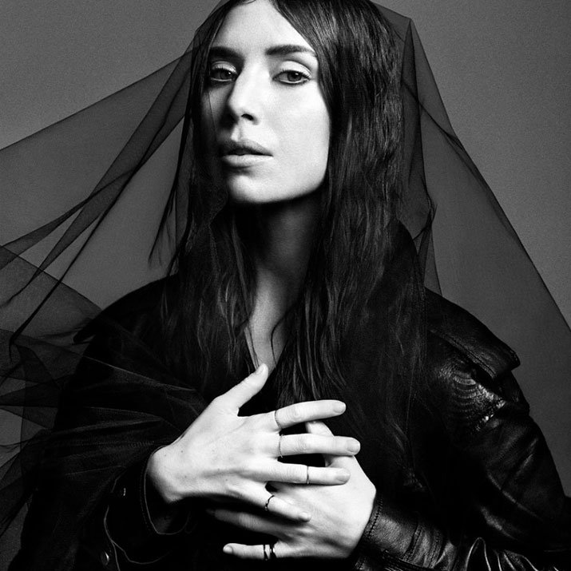
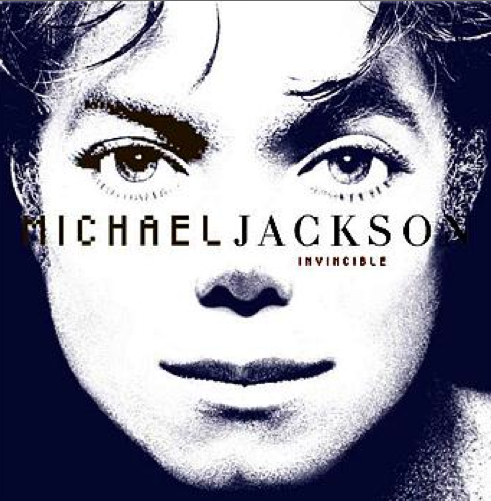
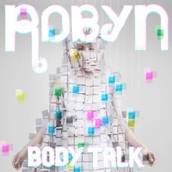
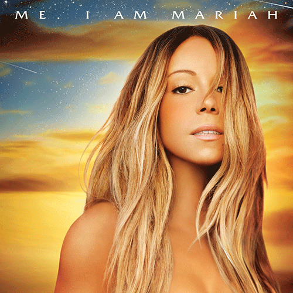
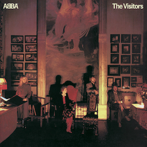
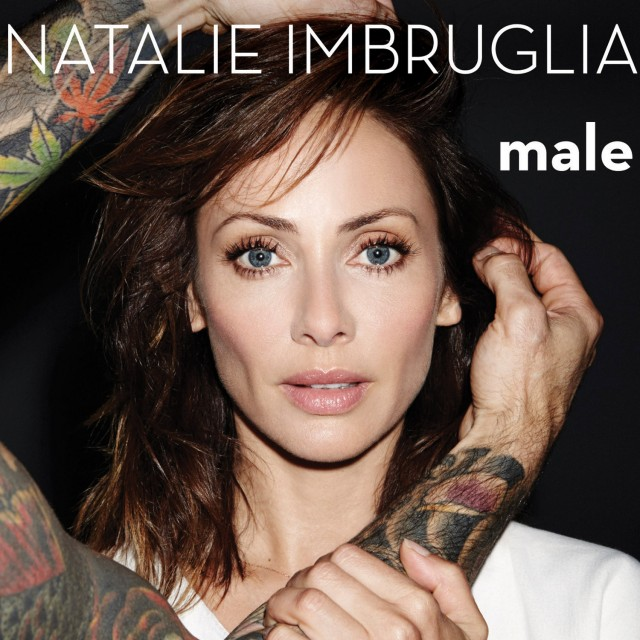

Anders Stenberg – gitarr och bas
Mikael Svensson – keyboard, orgel och piano
Agnetha Fältskog
Benny Andersson
Anni-Frid Lyngstad
| Artist | Cover | Band Members | Latest album | Country | Source |
|---|---|---|---|---|---|
| 1. Beyoncé | |
- | Lemonade (2016) | USA | Wikipedia |
| 2. Lykke Li |  | Lars Skoglund – trummor
Anders Stenberg – gitarr och bas Mikael Svensson – keyboard, orgel och piano |
I Never Learn (2014) | Sweden | Wikipedia |
| 3. Sia | - | Everyday Is Christmas (2017) | Australia | Wikipedia | |
| 4. Michael Jackson |  | - | Invincible (2001) | USA | Wikipedia |
| 5. Robyn |  | - | Bodytalk (2010) | Sweden | Wikipedia |
| 6. Kylie Minogue | - | Kylie Christmas (2016) | Australia | Wikipedia | |
| 7. Mariah Carey |  | - | Me. I am Mariah.. The Elusive Chanteuse (2014) | USA | Wikipedia |
| 8. ABBA |  | Björn Ulvaeus
Agnetha Fältskog Benny Andersson Anni-Frid Lyngstad |
The Visitors (1981) | Sweden | Wikipedia |
| 9. Natalie Imbruglia |  | - | Male (2015) | Australia | Wikipedia |
| Lady Gaga | - | Joanne (2016) | USA | Wikipedia |